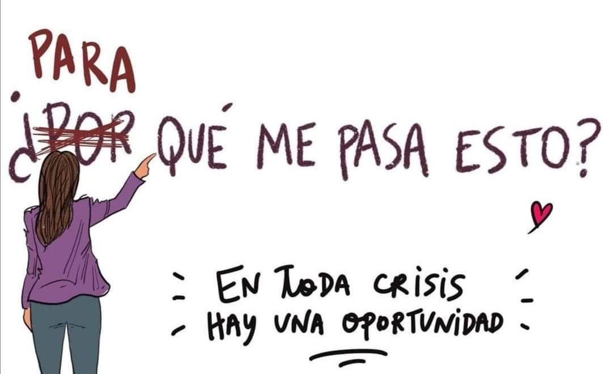

Preguntas Frecuentes
En esta pagina del sitio podrás ver las preguntas que más se escuchan en la primera entrevista y también, aquellas que pueden aparecer al momento de decidir empezar con tu espacio psicológico. Ojo! algunas se te pueden ocurrir y no aparecer, pero no desesperes o sientas que no es valida... para eso en la página de contacto te dejo un formulario para que completes y realices todas las preguntas que te parezcan.
En primer lugar me gustaria aclararles que no existen motivos que esten bien o mal, que sean suficientes o no... en términos de definición son muy personales y cualquier motivo de estos que enumerare a continuación pueden ayudarte a descartar cualquier duda o despejar la tipica pregunta "¿ por esto voy a ir a terapia?" TODOS SON MOTIVOS SUFICIENTES pero estos podrian guiarte:
- Para ser escuchado
- Expresar tus emociones
- Darte un espacio
- Encontrar respuestas
- Para conocerte
- Comprender y afrontar situaciones
Lo primero es saber si existe algun tipo de preferencia en relación a la edad, sexo, etc. y segundo, pero no menos importante, es tener en cuenta estos factores cruciales:
- Asegurate de que tenga titulo oficial y matricula que lo habilite como profesional de salud.
- Buscar psicólogo/a segun la especialidad que necesites, en caso de ser necesario.
- Averigua la modalidad de atencion y si atiende con tu obra social.
- Debe asegurarte un espacio de confidencialidad bajo el secreto profesional.
Las sesiones tienen una duración entre 45minutos y 1 hora.
Hay varias maneras de recuperar la sesión. Una de las más clásicas es reprogramar el turno para otro día dentro de la semana. Otra opción es cambiar la modalidad, si venis presencial a sesión y por temas de horarios no llegas a tiempo, podes optar por tener la sesión virtual.
No hay problema en realizar cambios siempre y cuando sean informados antes de las 24hs de la sesión.